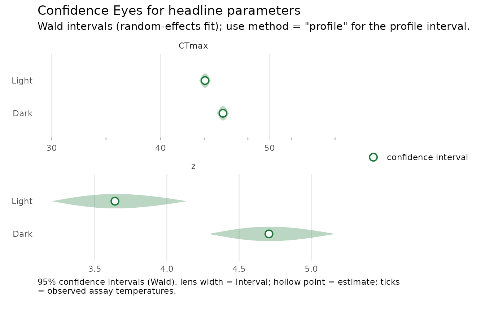

Case 3: Snow-gum PSII under Dark and Light recovery
Source:vignettes/case-study-snowgum.Rmd
case-study-snowgum.RmdThis is the frequentist analogue of the Snow-gum PSII case in the bayesTLS
supplement. The response is retained photosystem-II function, not
mortality, so the experimental Beta family is used.
Data and boundary handling
fvfm_prop is post-exposure Fv/Fm divided by its
pre-exposure value. The 394-row object is byte-identical to the pinned
bayesTLS object. Exact zeros are clamped inward by
standardize_data() because a Beta density is defined on the
open interval (0, 1); the warning makes this adjustment
visible.
leaf_std <- standardize_data(
snowgum_psii,
temp = "Temp", duration = "Time", proportion = "fvfm_prop",
duration_unit = "minutes"
)
#> Warning: standardize_data() clamped 90 of 394 finite proportion values into
#> [0.001, 0.999] for the Beta likelihood. Check whether boundary values and this
#> epsilon are scientifically appropriate.
table(snowgum_psii$recovery)
#>
#> Dark Light
#> 196 198Locked model
Recovery condition has direct effects on CTmax and
z; plant supplies one independent random intercept on
CTmax; low, up, and
k are shared. The reference time is 60 minutes and the
threshold is the relative midpoint.
This shared-shape choice is an intentional freqTLS analogue, not a claim of formula identity: the pinned bayesTLS supplement also teaches recovery-by-temperature shape terms. Those additional Bayesian shape terms are not silently substituted here.
leaf_fit <- fit_4pl(
leaf_std,
ctmax = ~ 0 + recovery + (1 | plant),
z = ~ 0 + recovery,
low = ~ 1,
up = ~ 1,
k = ~ 1,
family = "beta",
t_ref = 60,
method = "wald",
quiet = TRUE
)
diagnose_tdt_fit(leaf_fit)
#> # A tibble: 1 × 9
#> converged pd_hessian max_abs_gradient gradient_pass optimizer logLik n_params
#> <lgl> <lgl> <dbl> <lgl> <chr> <dbl> <int>
#> 1 TRUE TRUE 0.000290 TRUE nlminb 657. 9
#> # ℹ 2 more variables: AIC <dbl>, all_pass <lgl>
leaf_tls <- tls(leaf_fit, by = "recovery", lethal = FALSE, method = "wald")
leaf_table <- leaf_tls$summary
names(leaf_table)[names(leaf_table) == "median"] <- "estimate"
leaf_table
#> # A tibble: 4 × 5
#> recovery quantity estimate lower upper
#> <chr> <chr> <dbl> <dbl> <dbl>
#> 1 Dark CTmax 45.7 45.2 46.3
#> 2 Light CTmax 44.1 43.6 44.6
#> 3 Dark z 4.71 4.29 5.16
#> 4 Light z 3.64 3.20 4.14
plot_confidence_eye(leaf_fit, parm = c("CTmax", "z"), method = "wald")
This sublethal endpoint reports only CTmax and
z; Tcrit is not a valid headline quantity
here. Inspect convergence, Hessian/gradient diagnostics, the Beta
boundary warning, and the limited-random-intercept assumptions before
interpretation.
Licence boundary
Arnold et al. (2026; doi:10.64898/2026.04.09.717599) release the current
source under CC BY-NC 4.0. Pieter A. Arnold, the data holder, authorised
its use as this package’s separately licensed teaching dataset. Retain
the source and licence notice when reusing it. See
inst/COPYRIGHTS and the licence ledger.